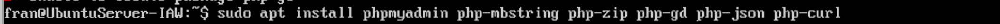
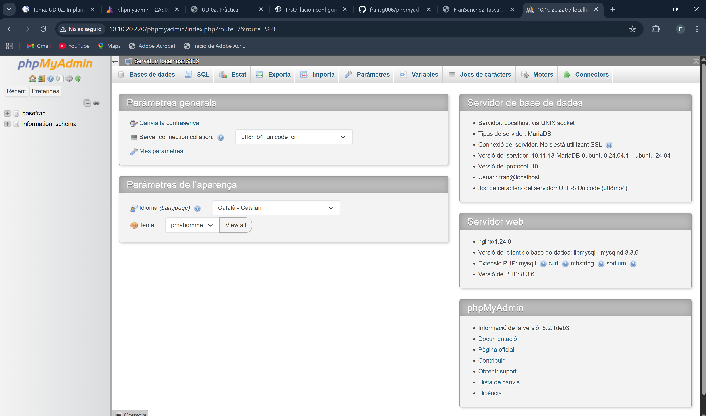
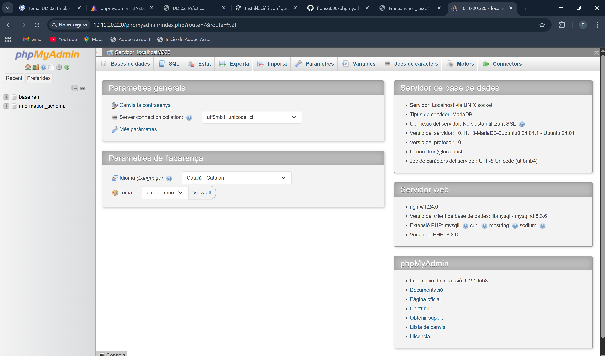
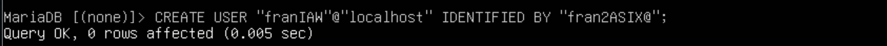
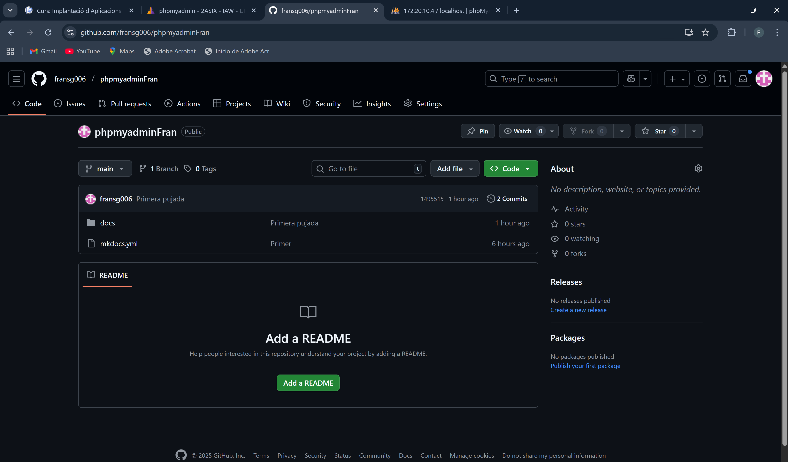

Objectiu
• Instal·lar, assegurar i configurar phpMyAdmin en un servidor Ubuntu. • Protegir PhpMyAdmin contra accessos no autoritzats. • Automatitzar la instal·lació i configuració de phpMyAdmin mitjançant scripts de Bash.
Tasques a fer
Instal·lació de PhpMyAdmin
Instal·la phpMyAdmin juntament amb les extensions PHP necessàries (php-mbstring, php-zip, php-gd, php-json, php-curl).

Configura phpMyAdmin perquè funcione amb nginx.
Al fitxer default de la ruta que es veu a la seguent captura he ficat les seguents linies de configuració.

Una vegada configurat correctament, ficant al navegador la IP del servidor i /phpmyadmin, veurem la seguent pantalla que si ens identifiquem, podrem accedir dins.
 

Permetre l’Accés per Contrasenya del root de MySQL
Canvia el mètode d’autenticació de l’usuari root de MySQL d’auth_socket a caching_sha2_password o mysql_native_password.
Pel que es pot veure, el mètode d'autenticació al que volem canviar ja es troba aplicat, per tant, no es necessari canviar-ho.

En cas de que no estiguera canviat i a la columna plugin es trobara el mode auth_socket, s'hauria d'emprar este comandament:
ALTER USER 'root'@'localhost' IDENTIFIED WITH 'caching_sha2_password' BY 'contrasenya';
Seguidament he canviat la contrassenya de root per a que siga 8448.

Verifica els mètodes d’autenticació utilitzats per cadascun dels usuaris.
El mètodes es poden veure a la seguent captura que es la mateixa que es veu dalt per a comprovar quin metode tenien els usuaris degut que al tractar de fer el comandament citat, ens ixia un error.
Configuració de l’Accés per Contrasenya per a un Usuari Dedicat de MySQL
Crea un nou usuari de MySQL amb una contrasenya segura.

Dona-li al usuari els privilegis apropiats per gestionar les bases de dades a través de phpMyAdmin.

Assegura la Instància de phpMyAdmin
Crea un fitxer .htpasswd per emmagatzemar les credencials d’usuari i contrasenya.
Per al usuari franHT la contra es 8448

Si s’ha d’afegir més usuaris, l’opció -c del comandament anterior no s’ha de ficar per tal de no sobreescriure el fitxer
Modifica la configuració del lloc per aplicar l’accés per usuari i contrassenya.
Al fitxer de configuració, he afegit les 2 linies auth_basic y auth_basic_user_file que es veuen al fitxer de configuració a la seguent imatge.

Reinicieu nginx per aplicar els canvis.

Ara una vegada reiniciat el servici veguem que ens demana credencials

Una vegada les fiquem podem accedir de nou al servidor, si ens tornem a identificar amb les claus del PHP.
Es a dir, que després de ficar les credencials valides on es veu a la captura superior, ens apareix la pantalla que ens ixia primera abans per a accedir a la base de dades.
Repositori de GitHub + GitHub Pages
He creat el repositori de GitHub que es veu a la seguent imatge amb les carpetes i fitxers propis de mkdocs. Dins de docs es troben els fitxers markdown i les imatges. Enllaç a GitHub 
Després per a pujar els canvis a GitHub Pages i així tindre un lloc web, he fet el seguent, i es pot veure al seguent enllaç

 Enllaç a GitHub Pages
Enllaç a GitHub Pages